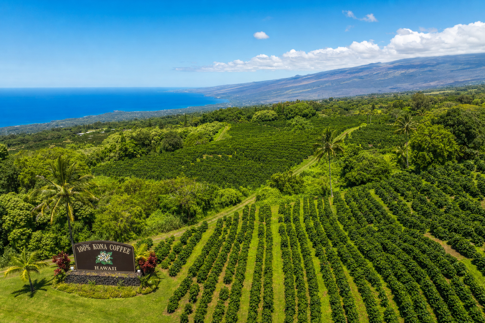

Hawaii's Most Underrated Road Trip
The Kona coffee belt runs for roughly 30 miles along the Mamalahoa Highway (HI-11) between Holualoa in the north and Honaunau in the south, covering the western slopes of Hualalai volcano between 1,000 and 2,500 feet elevation. It's one of the most scenic drives in all of Hawaii and one of the world's few commercial coffee-growing areas you can actually tour as a visitor.
Where to Start: Holualoa Village
The small artist and farming community of Holualoa at the top of the belt is the best starting point. Pull off at Holualoa Road from the highway and wind down through the village. Several farms have self-guided walking tours and small tasting rooms. Donkey Mill Art Center doubles as a coffee tour stop with excellent context on the history of Kona coffee and the wider art community.
The Farms Worth Visiting
Most farms along the belt accept walk-in visitors during harvest season (October–February) and offer tours by appointment year-round. Look for signs reading "Farm Tours Available" as you drive south on HI-11. The Kona Coffee Living History Farm near Captain Cook is an excellent living museum that recreates a 1920s Japanese coffee farming family's life — highly recommended for families.
The Tasting Experience
Each farm's coffee tastes slightly different based on elevation, microclimate, varietal, and processing method. At the higher elevations (1,800–2,500 feet), coffees tend to be brighter and more complex. Lower elevations produce rounder, chocolate-forward profiles. Do a few tastings to compare — you'll start to develop a vocabulary for what you're experiencing.
What to Bring Home
Look for 100% Kona on the label — not "Kona blend," which can be as little as 10% Kona. Direct-from-farm bags are the most authentic. Expect to pay $25–$55 for a pound of quality Kona — if you're paying less, it's probably a blend. We also sell our partner farms' beans at Lehua Bake House at 75-5801 Ali'i Drive — stop by for a cup and a bag to take home.